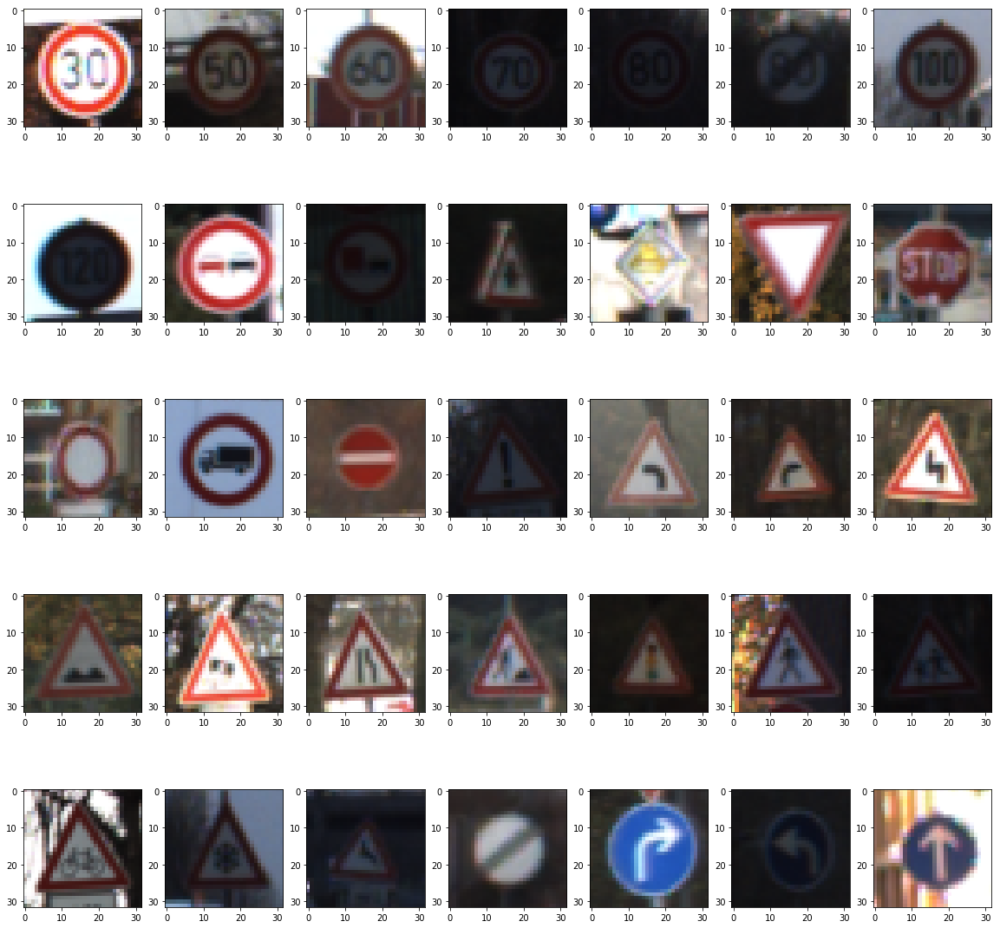
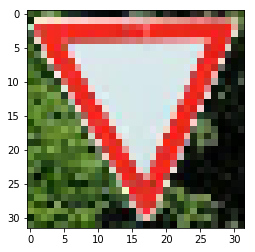
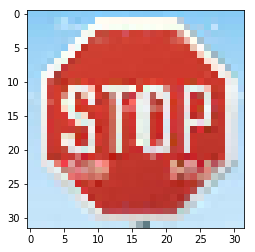
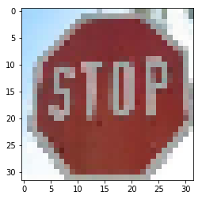
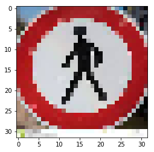
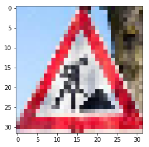
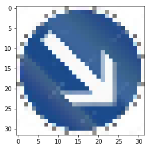
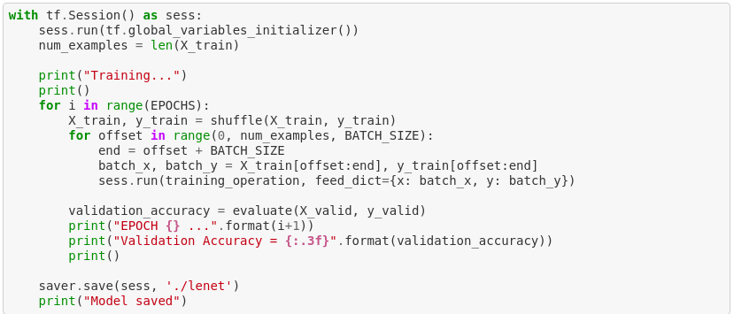

Goals of the Project
German Traffic Sign Classification Project for Self-Driving Car Engineer Nano Degree Term 1. A Convolutional Neural Network is designed and trained to detect the traffic signs using the German Traffic Sign Dataset. The system is also tested on German traffic signs to measure its performance.
- Loading the dataset.
- Exploring, summarizing and visualizing the dataset.
- Designing and Training the model architecture.
- Evaluating the Performance of the Model on the Test Dataset.
- Using the trained model to make predictions on new images.
Introduction
Deep Neural Networks (DNN) have greater capabilities for image pattern recognition and are widely used in Computer Vision algorithms. And, Convolutional Neural Network (CNN, or ConvNet) is a class of DNN which is most commonly applied to analyzing visual imagery. Traffic sign classification and detection is one of the major task in self-driving as it gives the input of what sign is in the image to decision making.
Traffic-sign recognition (TSR) is a technology by which a vehicle is able to recognize the traffic signs put on the road e.g. “speed limit” or “children” or “turn ahead”. This is part of the features collectively called ADAS. The technology is being developed by a variety of automotive suppliers. It uses image processing techniques to detect the traffic signs. The detection methods can be generally divided into color based, shape based and learning based methods.
Dataset
The Dataset used is German Traffic Signs Dataset which contains images of the shape (32x32x3) i.e. RGB images. I used the Numpy library to calculate summary statistics of the traffic signs data set given below:
- The size of training set is 34799
- The size of the validation set is 4410
- The size of test set is 12630
- The shape of a traffic sign image is (32, 32, 3)
- The number of unique classes/labels in the data set is 43
Exploratory Visualization of the Dataset
Visualization of the dataset is done in two parts. In the first part, a very simple basic approach is taken to display a single image from the dataset. After that, there is an exploratory visualization of the data set, by drawing the first image of 35 classes, 43 classes in total.
Model Architecture
As a first step, I decided to shuffle my X_train, y_train. Then, I used Normalization as one of the preprocessing technique. In which, the dataset (X_train, X_test, X_valid) is fed into the normalization(x_label) function which converts all the data and returns the normalized one.
Training, Validating and Testing the Model
Training is the stage of machine learning when the model is gradually optimized, or the model learns the dataset. The goal is to learn enough about the structure of the training dataset to make predictions about unseen data. If you learn too much about the training dataset, then the predictions only work for the data it has seen and will not be generalizable. This problem is called overfitting — it’s like memorizing the answers instead of understanding how to solve a problem.
Traffic Sign Detection is an example of supervised machine learning: the model is trained from examples that contain labels. In unsupervised machine learning, the examples don’t contain labels. Instead, the model typically finds patterns among the features. LeNet model used gives the logits and cross entropy. Finally, Adam optimiser is used for optimisation. A validation set can be used to assess how well the model is performing. A low accuracy on the training and validation sets imply underfitting. A high accuracy on the training set but low accuracy on the validation set implies overfitting. The below code is the typical way of running the training and validation process in Tensorflow. Validation Accuracy after 20 epochs comes out to be 0.975.
Testing the Model on new images
Given below are the eight German traffic signs that I found on the web for the purpose of testing on new images different from the test set. Further, the performance of the model is tested on fresh data from the Internet. Each image has a different resolution and size. For the purpose of testing, each image is resized to 32x32. The German Traffic signs after resizing them to 32x32:






Questions asked in the Project!
What is the no. of training, testing examples and the number of classes in the dataset?
- Number of Training Examples -> 34799
- Number of Testing Examples -> 12630
- The number of unique classes/labels in the data set is 43
What is the shape of the Updated Image in the Dataset?
- The shape of the input traffic sign image is (32, 32, 3)
How to visualize the first image of each class in the dataset?
- fig=plt.figure(figsize=(20, 20))
- columns = 7
- rows = 5
- for i in range(1, columns*rows +1):
- ----X_few = X_train[y_train == i]
- ----fig.add_subplot(rows, columns, i)
- ----plt.imshow(X_few[0, :, :, :])
- plt.show()
How to carry out the process of Normalization?
- def normalization(x_label):
- ----return x_label / 255 * 0.8 + 0.1
- X_train = normalization(X_train)
- X_test = normalization(X_test)
- X_valid = normalization(X_valid)
How to do the training process in Deep Learning? 
Results
My final model results were: validation set accuracy of 0.975. I used normalized images to train the model and the number of EPOCHS=20 and the BATCH_SIZE=128. With the use of the defined hyperparameters, the validation set accuracy is 0.975 which is more than the my previous benchmark of 0.93. Further, the model has an accuracy of 0.625 on the eight downloaded images of german traffic signs from the web.